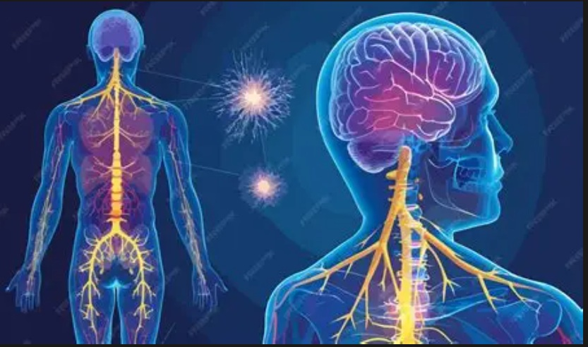

Organisation du système nerveux
Une connaissance millimétrique des structures nerveuses et vasculaires est essentielle pour aborder une lésion sans endommager les zones fonctionnelles (aires motrices, du langage ou de la vision).
- L'encéphale : Comprend les hémisphères cérébraux (lobes frontal, pariétal, temporal et occipital), le cervelet et le tronc cérébral.
- Les méninges et le LCR : La dure-mère, l'arachnoïde et la pie-mère protègent le système nerveux central, baigné par le liquide céphalo-rachidien.
- Le rachis et la moelle épinière : La colonne vertébrale abrite le canal rachidien et les racines nerveuses.
